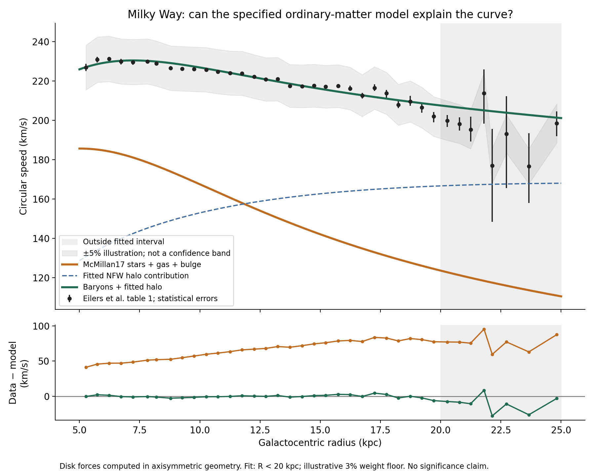
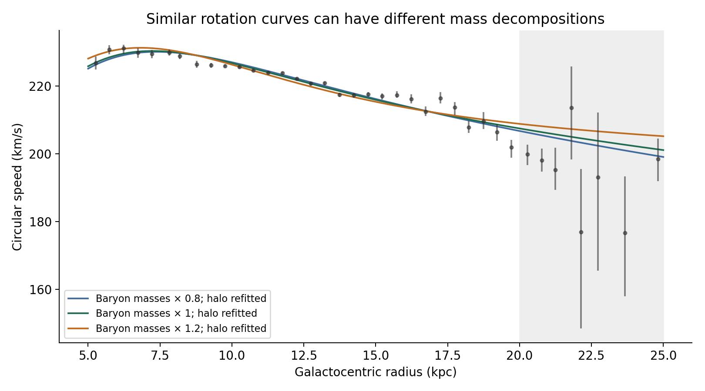

Enough stars and gas
to explain the rotation?
Our specified ordinary-matter model supplies too little radial gravity. Adding an extended dark-matter halo gives a much closer fit to the published inner rotation curve.
A conditional model comparison. This uses Newtonian gravity and an axisymmetric Galactic model. It does not identify dark-matter particles, uniquely determine the halo, or reject every possible ordinary-matter distribution.
The first real-data result.
We use all 38 bins in Eilers et al.’s published table, with ordinary matter from galpy’s McMillan17 disk-and-bulge model. The halo from that model is removed and a new spherical NFW halo is fitted.
Below 20 kpc, the root-mean-square speed mismatch decreases from 66.72 km/s with fixed ordinary matter to 2.00 km/s with two fitted halo parameters. These are in-sample descriptive residuals, not detection significance.

| Radius (kpc) | Published (km/s) | Ordinary matter | With halo | Unaccounted force |
|---|---|---|---|---|
| 8.19 | 228.86 | 176.89 | 229.84 | 40.3% |
| 14.74 | 217.60 | 143.24 | 216.49 | 56.7% |
| 19.71 | 201.91 | 124.51 | 207.93 | 62.0% |
Near the Sun, about 40% of the required radial gravity is unaccounted for by this ordinary-matter baseline. The fraction is 1 − v²baryons/v²data; it is not an enclosed mass fraction.
Similar curves, different halos.
Rescaling all ordinary-matter masses by −20% and +20%, preserving their spatial shapes and refitting the halo, produces similarly close curves. The fitted halo scale radius changes from 7.83 to 27.13 kpc, compared with 12.53 kpc in the nominal case.
The corresponding halo mass inside 20 kpc spans 1.18–1.42 × 10¹¹ solar masses. This sensitivity range is not a confidence interval. We do not infer the Galaxy’s total or virial mass.

Assumptions that matter.
The published circular speeds are inferred from stellar motions using Jeans equations and axisymmetric assumptions. They are not direct measurements of stars on circular orbits. Eilers et al. report additional systematic uncertainties of roughly 2–5% out to 20 kpc, increasing farther out.
Our nominal fit uses the 30 bins below 20 kpc and an illustrative 3% error floor combined with each asymmetric statistical error. This is a weighting rule, not a reconstruction of correlated systematic errors. We calculate no p-values or posterior confidence bands.
The eight outer bins have a larger RMS mismatch of 15.30 km/s. They remain visible so the limits of the fit are visible too.
The ordinary-matter baseline itself came from a joint Galactic mass-model analysis; it is not an assumption-free inventory. Our sensitivity checks vary mass normalization, weighting, and fitted radial range. They do not vary disk shapes, gas structure, the Solar reference frame, or departures from axisymmetry.
v²total = v²baryons + v²halo
We compute flattened disk forces from their potential. Speeds are combined in quadrature; spherical enclosed-mass formulas are used only for the spherical halo.
Where the Oort analogy holds.
An outer spherical shell supplies no acceleration inside its empty cavity. This fitted halo instead contains mass throughout the sampled radii and supplies substantial inward acceleration. The analogy helps us understand geometry; it does not make the two distributions interchangeable.
The next useful experiment is to compare another published rotation curve, then vary the ordinary-matter shape and test competing halo profiles over the same radial interval.
Inspect and reproduce.
Create a Python virtual environment, install requirements.txt, and run model.py. Download the archived source HTML into the same directory to reproduce the table extraction. Its checksum is recorded in the results.
Primary sources.
- Eilers et al. · The Circular Velocity Curve of the Milky Way from 5 to 25 kpc — data and measurement assumptions.
- McMillan · The mass distribution and gravitational potential of the Milky Way — ordinary-matter baseline.
- galpy 1.12.0 · McMillan17 implementation — numerical potential used here.